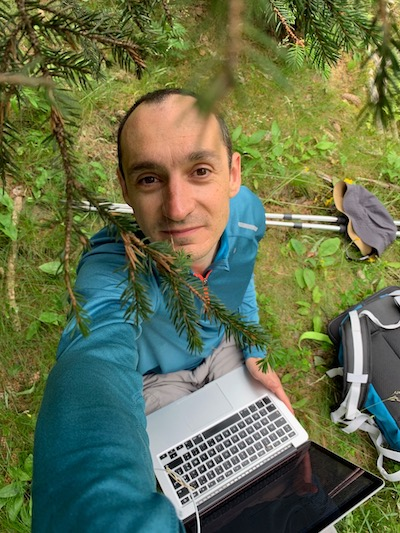

9h-12h Cloud and Storage
9h00
Plenary Session
Towards decentralized p2p storage as a secure and sustainable alternative to centralized cloud storage solutions
Amine Ismail, HIVE
In 2006, British mathematician Clive Humby described data as "the new oil". Later on, as the growth of the Web, it becomes apparent how prophetic this statement was. In order to derive value from data, businesses allocate significant resources towards storing and managing it. Centralized storage has been the prevailing method for storing data for many years, where a third-party provider manages and stores data on large servers. In such a storage system, no matter how stringent the security measures are, the data center authority holds the encryption keys for personal, sensitive, and business information placed in their custody. This raises potential concerns for accessibility, transparency, privacy, sovereignty and control. Moreover, a single point of failure presents an easier and more gainful target for hackers attempting to gain access to a significant amount of data. Decentralized storage solutions were developed to address these issues, among others. They offer a secure and resilient way to store data by distributing storage responsibilities among multiple participants. This approach leverages a network of storage devices contributed by independent users as a shared pool of storage space for storing data while ensuring the persistence and availability of the stored data even when individual peers in the network are unreliable. In this talk we give an overview of the architecture of decentralized cloud storage systems, we discuss their advantages and limitations compared to traditional storage platforms and we present the challenges to be addressed to build such a solution.

9h25
Plenary Session
Clock-G: Système de gestion des graphes temporels pour le domaine d’objets connectés
Maria Massri, Orange Cloud
Les graphes sont largement utilisés comme outil d'analyse pour modéliser les interactions dans divers domaines, comme les réseaux sociaux, la finance, et la sécurité informatique. Toutefois, de nombreux graphes sont sujets à des changements continus ou sporadiques, et l'analyse de leur historique est souvent plus pertinente que l’analyse d’un seul état statique. La gestion de l'historique de ces graphes débloque de nombreuses capacités de requête, comme la reconstruction de l'état du graphe avant une défaillance du système, permettant ainsi de prévenir les causes de dysfonctionnement.
Dans cette présentation, nous nous concentrons sur l'utilisation de Thing'in, une plateforme de gestion de graphe développée par Orange. Thing'in est utilisée pour gérer un graphe IoT où les nœuds représentent en majorité des objets connectés et les arêtes représentent les connexions entre eux. L’étude de l’historique du graphe de Thing’in permet à ces clients une meilleure analyse des systèmes sous-jacents, notamment dans les usines intelligentes pour la détection des causes de défaillance des systèmes et le suivi des chemins des produits tout au long de la chaîne de fabrication.
Ainsi, notre objectif principal est de concevoir un système de gestion des graphes temporels et de l'intégrer dans la plateforme Thing'in. Pour ce faire, nous avons développé Clock-G, un système de gestion des graphes temporels, en résolvant divers défis tels que le langage de requête, l'optimisation des requêtes et le stockage des graphes. Ce système permet de stocker les graphes de manière compacte et d'interroger l'historique de manière intuitive à l'aide d'un langage de requête. De plus, notre évaluateur de requêtes utilise l'historique des données déjà inséré dans Clock-G pour choisir
9h50
Plenary Session
Operating a meteorological risk report map in a sovereign cloud with 3 classes of object storage
Charlotte Latemendia, OVH Cloud
During this talk we will detail with a concrete use case and demonstration how to leverage on cloud infrastructures to build a meteorological report map. We will detail 3 classes of object storage (high performance, standard et archive) and provide explanation how to select the right class of storage, selecting resiliency, performance and price during the long lifecycle of the data
As Product Manager, Charlotte Letamendia is animating the roadmap of Storage services manaed by OVHcloud, the European cloud leader.
By sharing daily with users of cloud infrastructure, IT administrators, devops, developers, she passionately debates needs and products. Deployment at scale, performance, agility, cost, scalability, resilience, so many challenges to confront with market trends, standards, and innovations. His role as product manager is humbly to carry the voice of the users and rally the research and development teams, to turn that vision and innovations into a reality.
Charlotte is an engineer by training, in Telecommunication ENST Paris, and has more than 15 years of experience in product management in high growth tech industry, with specific experience in digital video, media devices, and cloud infrastructure. When not talking about products, Charlotte is passionate of outdoor sports and adventures, you will find her in mountains or on a bicycle.

10h15-10h40
** 25 minute break **

10h40
Plenary Session
Why Globally Re-shuffle? Revisiting Data Shuffling in Large Scale Deep Learning.
François Trahay, Telecom SudParis
Stochastic gradient descent (SGD) is the most prevalent algorithm for training Deep Neural Networks (DNN). SGD iterates the input data set in each training epoch processing data samples in a random access fashion. Because this puts enormous pressure on the I/O subsystem, the most common approach to distributed SGD in HPC environments is to replicate the entire dataset to node local SSDs. However, due to rapidly growing data set sizes this approach has become increasingly infeasible. Surprisingly, the questions of why and to what extent random access is required have not received a lot of attention in the literature from an empirical standpoint. In this work, we revisit data shuffling in DL workloads to investigate the viability of partitioning the dataset among workers and performing only a partial distributed exchange of samples in each training epoch. Through extensive experiments on up to 2,048 GPUs of ABCI and 4,096 compute nodes of Fugaku, we demonstrate that in practice validation accuracy of global shuffling can be maintained when carefully tuning the partial distributed exchange. We provide a solution implemented in PyTorch that enables users to control the proposed data exchange scheme.
11h05
Plenary Session
Container Image Placement for Service Provisioning in the Edge
Thomas Lambert, Inria
Edge computing promises to extend Clouds by moving computation close to data sources to facilitate short-running and low-latency applications and services. Providing fast and predictable service provisioning time presets a new and mounting challenge, as the scale of Edge-servers grows and the heterogeneity of networks between them increases. This work is driven by a simple question: can we place container images across Edge-servers in such a way that an image can be retrieved to any Edge-server fast and in a predictable time. We propose two novel container image placement algorithms based on k-Center optimization. In particular, we introduce a formal model to tackle down the problem of reducing the maximum retrieval time of container images. Based on the model, we present KCBP and KCBP-WC, two placement algorithms which target reducing the maximum retrieval time of container images to any Edge-server. Evaluations using trace-driven simulations demonstrate that KCBP and KCBP-WC can be applied to various network configurations and reduce the maximum retrieval time of container images.
11h30
Amphi Thévenin
Cloud-native automation and interfacing to HCP: What happens with Data?
Fotis Nikolaidis, FORTH
The world of computational science faces a paradox due to the separation of HPC and Cloud computing. HPC users seek access to the data analysis and automation tools provided by Cloud technologies, while Cloud users desire the powerful resources of HPC centers. One way to address these requirements is by partitioning the infrastructure into HPC and Cloud stacks. This, however, can lead to increased maintenance costs and decreased utilization. Additionally, transferring data between different computing systems can be a bottleneck since the amount of data generated by scientific simulations and analyses continues to grow exponentially.
This talk will present a unified architecture for the collocation of HPC and Cloud applications on the same hardware. Our solution exploits Kubernetes as the runtime manager, Slurm for resource allocation, and Singularity and a rootless containerization engine. The proposed architecture will be demonstrated through two use-cases that utilize visual workflows (Argo). The first use-case involves a multi-stage genome analysis workflow that stores data on an on-demand object storage backend (S3), while the second use-case integrates MPI codes and post-analysis stages into a fully automated workflow.
14h-17h30 HPC and Lustre

14h00
Plenary Session
Lustre: status and path forward
Sebastien Buisson, Whamcloud
Lustre is the leading open-source and open-development file system for HPC. Around two thirds of the top 100 supercomputers use Lustre. It is a community developed technology with contributors from around the world. Lustre currently supports many HPC infrastructures beyond scientific research, such as financial services, energy, manufacturing, and life sciences and in recent years has been leveraged by cloud solutions to bring its performance benefits to a variety of new use cases (particularly relating to AI). This talk will reflect on the current state of the Lustre ecosystem and also will include the latest news relating to Lustre community releases (LTS releases and major releases), the roadmap , and details of features under development.
14h30
Plenary Session
Optimizing flash at Scale
Gaël Delbary, CEA
TBA
15h
Plenary Session
RobinHood: storing and querying a filesystem's metadata for fast access
Yoann Valeri, CEA
As supercomputers are becoming faster and faster, so does their data output. Since the regularly accessed data must be stored and available quickly to users, it is important to put it on fast storage systems. However, these tend to have a low capacity, meaning we must be able to chose the data which should remain on those types of storage systems, and which can be placed on slower but more capacitive systems. As such, it is important to be able to accurately know the state of a filesystem at any point, but using the conventional means provided by the operating system for this, for instance to do filesystem traversals, can be time consuming if done regularly. Moreover, these operations impose a heavy load on the filesystem, making it slower.
To counter these problems, we created a suite of tools called RobinHood that aims to mirror a filesystem in a database, and use the latter to define policies that will manage data placement according to their usage.
15h30-16h
** 30 minute break **
16h00
Plenary Session
Quality of Service in Lustre an hands-on approach
Etienne Aujames, DDN
Storage HPC centers are usually shared by multiple organisations/users with various applications. Those applications can have all kind of IO patterns or metadata accesses assuming they are alone consuming storage ressources.
So, how do we prevent those different HPC jobs or clients to impact each others? How do we prioritize a particular HPC jobs or nodes? How do we maintain an acceptable storage performances for all the consumers?
Lustre's filesystem already implements a QoS solution for those purposes named TBF (Token Bucket Filter). This functionality has been in production for 2 years at the CEA. This presentation will describe what is Lustre TBF, how it can be used and what the current limitations are.

16h30
Plenary Session
Investigating allocation of heterogeneous storage resources on HPC systems
François Tessier, Inria Rennes
The ability of large-scale infrastructures to store and retrieve a massive amount of data is now decisive to scale up scientific applications. However, there is an ever-widening gap between I/O and computing performance on these systems. A way to mitigate this gap consists of deploying new intermediate storage tiers (node-local storage, burst-buffers, …) between the compute nodes and the traditional global shared parallel file-system. Unfortunately, without advanced techniques to allocate and size these resources, they remain often underutilized. To address this problem, we investigate how heterogeneous storage resources can be allocated on a HPC platform, in a similar way as compute resources. In that regard, we introduce StorAlloc, a simulator used as a testbed for assessing storage-aware job scheduling algorithms and evaluating various storage infrastructures.
17h
Plenary Session
Data Mover: bridging the cap between HPC and Cloud storage
Salem El Sayed, Juelich Research Center
Over the past years the storage landscape has increased in both size and options of storage systems. Contrary to HPC environments, storage systems are not fully replaced periodically and old systems are routinely operated besides newer technologies. This proves to be challenging for users having their data distributed across these different systems and their various APIs. To facilitate users data movement across the boundaries of old, new and different, the Data Mover was developed as part of the Fenix Data Services. In this talk we describe the Data Mover service, how it is operated and what options it provides the users. We will motivate the development of the Data Mover by introducing the complex infrastructure of the Juelich storage systems and how the Data Mover helps users navigate their data between components.